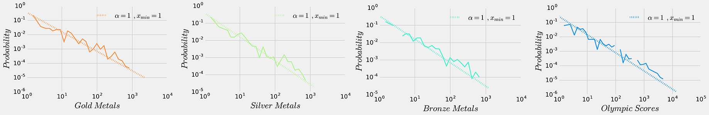

一、“梦之队”的奥运“统治”
1、“梦之队”的“统治”程度
量化一个国家对某个项目的“统治”程度，可以从金牌数占比和累计贡献率两种算法考虑。金牌数占比即为某一个国家所获得的总计金牌数量占该项目所产生的所有金牌数的比重，另一方面累计贡献率是基于金银铜牌的不同分量，将该国获得的所有金银铜牌分别赋值4、2、1分，金银铜牌数分别乘以所对应的分值，再相加得出一个国家的总得分，再与该项目所产生奖牌数的总分数做比，即累计贡献率＝（该国所获金牌数＊4＋该国所获银牌数＊2+该国所获铜牌数＊1）／（金牌总数＊4+银牌总数＊2+铜牌总数＊1）。
图1:“梦之队”所获金牌数占总比
用各国所获金牌数进行衡量，如上图所示梦之队的夺金数均占较大比例。其中中国队在乒乓球项目上占比最大，为87.50%。在奥运赛场上国乒已经五次包揽乒乓球项目的金牌，放眼世界乒坛三大赛事，无论是世乒赛、世界杯还是奥运会，中国队包揽金牌已成常态，中国乒乓球“梦之队”的称号当之无愧。
中国跳水队虽被称为“梦之队”，但并不是奥运会跳水比赛历史上获金牌奖牌数最多的国家，反而美国所获金牌数占比是第一。中国金牌数占比将近1/3稍落后于美国位列第二，统治力也还是很强。 射箭项目自1900年就登上奥运会舞台，虽然中间消失过半个世纪，但在1972年又重回奥运舞台，所以除了闻名的韩国射箭梦之队，还有不可忽略的金牌数和奖牌数来自美国。在金牌数的占比中，韩国以超过1/3的占比位列第一，约1/5金牌数由美国获得。
在奥运会篮球项目上，美国以76.67%的金牌数占比成绩稳坐第一，历届比赛中其他国家除了前苏联曾获得4枚金牌，独联体和阿根廷各获得过一枚之外，其他国家均无奥运会篮球金牌入账，所以美国夺金的次数显示出其对于该项目的垄断优势。
图2:“梦之队”对项目贡献率
用累计贡献率进行衡量，如图2，所得结果与金牌数占比类似，同样的梦之队对于所在项目的贡献均较大。由上文提到的累计贡献率的算法可以得出中国对于乒乓球的累计贡献率为67.54%，超过其他所有国家贡献的总和，说明了乒乓球奥运成绩呈现“一边倒”，“一家独大”之明显态势。跳水项目上，中国跳水队以23.29%超过五分之一的贡献率落后于美国排名第二，不过其单项实力还是远超其他国家的。韩国对于射箭项目的累计贡献率为26.53%也是对这个项目贡献最大的国家，在篮球项目中，美国的累计贡献率为47.14%，几乎是一半的贡献率。
由上面两种算法来衡量，可以展现出梦之队对于自己项目的统治程度均很高，尤其中国乒乓球和美国篮球是梦之队个体的绝对统治，跳水和射箭虽也有美国算是强队，但中国跳水队和韩国射箭队依然有很强的实力。
2、“梦之队”的“统治”时间
图3:“梦之队”历届获奖情况
·中国乒乓球——通过每一届每个国家的每一届具体获奖情况来看，中国对于乒乓球的垄断是在整个时间段里一直存在的，并没有因为时间或届数不同发生改变。自1988年乒乓球第一次作为正式项目出现在汉城奥运会的赛场上，至今在奥运会的赛场上已经连续进行了8届奥运会的乒乓球比赛。除了1988年、1992年和2004年共丢了四块金牌外，中国乒乓球梦之队赢下了该项目其他所有金牌和尽可能多的银牌、铜牌。尽管2010年国际乒联通过了乒乓球奥运瘦身计划，将单打的参赛名额从原有的3人削减至2人，并调整了比赛顺序，先单打后进行团体赛，还是没有改变国乒对于该项目金牌的包揽。
·中国跳水——由中国跳水队每一届的获奖情况可以清晰地看出，中国跳水梦之队之所以成绩占比位列第二，是因为跳水项目是从1896年奥运会伊始就有的项目，然而新中国是从八十年代恢复国际奥委会合法席位之后才正是参加奥运。也就是说美国队参加了从第一届至今的跳水比赛，而中国队从1984年第23届奥运会才开始有跳水比赛成绩。从散点图中可看出，尤其是在2000年之后，中国跳水队每一届均可收获8枚金牌中的6枚或7枚，稳定在这种梦幻的项目优势之上。
·韩国射箭——自1984年洛杉矶奥运会设立女子射箭项目以来，韩国几乎包揽了射箭项目个人和团体的金牌，从1988年至今的八届奥运会，射箭女团金牌更是从未旁落，一直都装在韩国队的囊中。这支“韩国梦之队”成为了当之无愧的射箭霸主。
·美国篮球——自1992年巴塞罗那的第25届奥运会上夺得金牌的美国男篮的第一次被人们称为“梦之队”之后，历届由NBA职业球员为骨干所组成的参加男篮世锦赛或夏季奥运会的美国男篮，依成军时间先后顺序分别被冠以梦二队、梦三队……之称。在1996年亚特兰大奥运会和2000年悉尼奥运会上，梦三队和梦四队也都拿到了奥运金牌。但在2004年的奥运会半决赛“梦六队”输给阿根廷，这也是美国男篮在被冠以梦之队称号后第一次也是唯一一次失掉奥运会金牌。自2008年以来“梦八队”、“梦十队”、“梦十二队”已经在奥运会赛场24战24捷，连续第三届奥运会完成卫冕。同时美国女篮也在2016年的里约夺得金牌，成就奥运会六连冠的伟业。
总的来说，“梦之队”们对于单项有很强的统治力，其中既有从数据上看在整个时间段中垄断程度极高的项目，比如中国队的乒乓球和美国队的篮球，又有分段垄断的情况出现，就像1988年之后的韩国女子射箭、2000年之后的中国跳水。
3、“梦之队”所在项目的国家间差距
.
图4:乒乓球、跳水、射箭、篮球项目获奖基尼系数
基尼系数是判断收入分配公平程度的指标。基尼系数是比例数值，在0和1之间，是国际上用来综合考察居民内部收入分配差异状况的一个重要分析指标。基尼系数，按照联合国有关组织规定：低于0.2为收入绝对平均；0.2-0.3为收入比较平均；0.3-0.4为收入相对合理；0.4-0.5为收入差距较大；0.5以上为收入差距悬殊。此处用基尼系数来类比衡量奥运项目的获奖国家间的差距，从而判断垄断程度。
以“梦之队”所在项目乒乓球、跳水、射箭和篮球为研究对象，基于金银铜牌价值不同，延用前文累计贡献率算法中对于金银铜牌分别4、2、1分的赋值，对赋值后的各国得分差异进行分析。以国家各自总得分可分别计算出各项目的基尼系数，如图3所示，这四项的基尼系数均超过0.6，甚至乒乓球的基尼系数高达0.7356。依据基尼系数评判的分段标准，不同国家在这四个单项上的奥运成绩差距悬殊，由此可以推导出梦之队们对于自己的项目垄断程度高。
4、其他单项国家间差距
图5:其他单项获奖基尼系数
前面推论出梦之队所在项目的被垄断程度很高，其他项目也可以同样用基尼系数这一指标来衡量单项上的国家成绩的差距。首先将获奖国家数超过10的项目筛选出，再以每个国家在该项目上获奖情况总得分（金银铜牌数4、2、1分赋值）为各国家指标，这些项目的基尼系数大多很高。从图4可直观地看出，大部分项目的基尼系数落在大于0.5的区间里。如图所示，一共展现了36个单项的情况，其中基尼系数大于0.5有足足28项，即大约78%的项目都存在国家间差距悬殊的现象。另外在差距较大的区间（0.4—0.5）里有6项，还有2项落在0.35-0.4的区间里为差距相对合理。由此处分析可以看出绝大多数奥运单项的获奖国家间实力差距悬殊，单个项目被垄断的程度很高。
5、奥运成绩（总得分）国家间差距
1）历届累计获奖情况
图6:十大奥运强国历届金银铜奖牌总数占比及该国贡献率
美国在所有届奥运会中以金牌总数1022枚占比21.27%，将31届奥运会所产生的超过1/5金牌收入囊中，成为奥运会历史上最大赢家。其后的俄罗斯以约莫其一半的金牌数591枚占比12.3%，德国紧随其后以428枚金牌占比8.91%，可见美俄德的确是在整个奥运历史周期里占据着第一集团的三个国家。第二集团的七个国家所获金牌数均落在［140，265］的数量区间里，占比从3%～5.5%之间不等。美俄作为金牌和奖牌大户，虽说银牌和铜牌总数也同样占据着前两位，本国的金银铜三项各自的总数却呈递减关系。其他国家的银牌铜牌数与其金牌数偏差较小。
如上图第四个环形所示，美国是对奥运奖牌贡献率最大的国家，以金银铜牌分别赋值4、2、1分来算，美国得分6380，贡献率为18.83%。值得一提的是，十个国家中基本每个国家的贡献率的多少都与金牌数占比的排名一致，然而中国和法国是例外。在金牌数上，中国的227枚多于法国的212枚，但就贡献率而言法国4.69%的占比却是略胜中国的4.09%一筹。
由各国累计奖牌数量占比和贡献率来看，实力处于第一集团的美俄德三国与其他国家的获奖情况拉开了很大差距，也在奥运总成绩上占据垄断地位。
目前关于奥运强国划分方法主要有两种，一种是根据金牌榜为此进行划分，另一种是对奖牌或是前八名成绩分别进行赋值，然后采用巴雷托截集法进行划分。习惯上人们称美、俄、德为第一集团，而把奥运强国中其他国家称为第二集团。自1986年第一届至今，一共有28次夏季奥林匹克盛会。合计所以届的数据，依据金银铜奖牌数的获得情况，以总金牌数榜单前十位的国家作为本次研究当中的十大奥运强国，分别是美国、俄罗斯、德国、英国、中国、法国、意大利、匈牙利、瑞典和澳大利亚。（其中因为政治因素，俄罗斯在1992年以独联体的名义参赛，1992～1991年期间为苏联，同时德国在1949～1990年期间分裂为民主德国和联邦德国。）
图7:历届获奖牌数变化
作为第一集团的美俄德，其中长期表现的最稳定的是美国，其竞技水平之高人尽皆知，但在苏联解体前的几届，美国的奥运成绩金牌奖牌数一直位居其后。由上图动态柱状图可以看出，从1956年至1992年苏联的金牌奖牌数基本是位居榜首，美国德国交错占据二三位。随着二十世纪九十年代初苏联解体和两德合并，美国在奥运竞技体坛的霸主地位逐渐显示出来，这不同于初始几届奥运会美国成绩突出是因为参赛国数量少且分散，美国近六届奥运（自1996年以来）均能保持金牌数奖牌总数第一位（除08北京奥运中国金牌数第一），这又归功于其在田径和游泳两大基础项目的强势还有较其他国家而言更广的获奖面。
中国是典型的奥运会赛场上的后起之秀，1984年才收获第一枚奥运金牌但自2000年起进入奖牌榜的第一梯队并开始稳定在前三甲。中国代表队的成绩在第29届北京奥运会上达到巅峰，以51枚金牌雄踞首位，这是第一次也是至今唯一一次的金牌榜第一位。中国队在这届奥运会上强势项目全面开花，冷门项目上也取得了很多突破。然而在之后的两个奥运周期里，由于队伍的更新换代还有更多国家体育竞技的发展，08年的突破没有能完全延续，但是也还是保持在奥运的第一阵营当中。总体来说，获奖面窄是中国在奥运会上取得更好成绩的一大障碍，也正是与长期雄踞世界经济体坛霸主地位的美俄两国的差距所在。所以尽管金牌数奖牌数较08年巅峰时期有所下降，但在近几届奥运会中，中国军团正逐渐扩大获奖面和获金面。
2）总得分基尼系数
.
图8:累计总得分基尼系数及历届变化
前文中解析了奥运会各单项基尼系数并得出绝大多数奥运单项的获奖国家间实力差距悬殊，这些单个项目存在被垄断的情况。同样给各国所获金银铜牌数以4、2、1分赋值，以各国历届奥运会的累计总得分为对象，计算出奥运会总成绩的基尼系数为0.7908，属于差距悬殊。
另外以同样的方法分别计算出1896到2016每一届奥运会各国总得分的基尼系数，除了第一届奥运的基尼系数约0.45其他届均超过0.5这一指标，也就是说几乎每一届奥运会的成绩国家与国家间都有着悬殊的差距。而且就历届变化趋势而言，1932年之前的奥运会的基尼系数每届间有较大波动，虽说基本也是在差距悬殊的范畴内波动，但最高的1904年有超过0.8，这一年结合图6的各国历届获奖牌数可看出在1904年美国几乎将所有奖牌收入囊中，垄断了那届奥运。在1932年之后，单届奥运会的基尼系数渐趋平稳，虽有轻微波动但也都维持在0.65－0.75之间，保持着较高水平的被垄断程度。
所以总得分的基尼系数及历届变化可以推出国家间在奥运会总体实力上差距悬殊，结合前文单项的基尼系数的情况便可得出，奥运会不论是单项上还是总体国家间的成绩都相悬殊，被垄断的程度都很高。
3) 各国奖牌数&总得分与可能性之间关系

图9:各国奖牌数与总得分可能性关系
如图9所示，定量分析国家获奖情况与可能性大小，可见国家所获金银铜牌数以及算出的总得分均与可能性呈负相关，并且这四个自变量与可能性的关系均落在一次函数模型的附近。这也就表明一个国家奥运成绩越好的可能性就越低，奥运成绩好的国家数量也少，也就是说往往强国拿到的奖牌多，弱国获得奖牌少，这样说明了奥运会奖牌资源的分布具有很强的异质性或不平等性。
二、奥运被垄断相关因素分析
1、人口&GDP与总得分
图10:国家人口与总得分关系&GDP与总得分关系
上图横坐标分别为人口和GDP，纵坐标为国家的奥运总得分，由此可看出两个自变量人口和GDP对国家奥运成绩的影响，根据散点的分布可得出一个国家的奥运总得分均与其人口和GDP呈正相关的关系。再结合前文用基尼系数推断出的不论奥运总分还是单项均存在很强的垄断，可以说明这种垄断与人口和GDP是正相关的。
2、各国奖牌数与总得分之间关系
图11:各国金银铜牌数关系以及与总得分关系
上图横坐标x取金牌数量的对数即log金牌数量，同样纵坐标y取银牌、铜牌数的对数log银牌数量、log铜牌数量，于是如图可看出金牌数的对数与银牌、铜牌数的对数均基本满足一次函数的正相关关系。由此可得出，各国在奥运会所获银牌、铜牌数与其所获金牌数量之间均符合幂律关系。
3、 线性回归模型定量分析人口&GDP与总得分
1) ‘y ~ xg + xp’
将国家的奥运总得分记为y，自变量国家的GDP和人口分别记作xg和xp，用xg和xp来预测y，即有'y ~ xg + xp'，此函数模型，R平方为0.23，拟合度差，所以该模型不适合。
备注：在统计学中对变量进行线行回归分析，采用最小二乘法进行参数估计时，R平方为回归平方和与总离差平方和的比值，表示总离差平方和中可以由回归平方和解释的比例，这一比例越大越好，模型越精确，回归效果越显著。R平方介于0~1之间，越接近1，回归拟合效果越好，一般认为超过0.8的模型拟合优度比较高。
2) 'y_log ~ xg_log + xp_log'

图12:人口&GDP与总得分的幂律关系模型
该模型取用GDP的对数xg_log和人口的对数xp_log来预测国家奥运总得分的对数y_log，即有'y_log ~ xg_log + xp_log'，如图11里的后两幅图所示两个自变量GDP和人口与因变量呈明显的正相关关系，且两个变量都很显著。
对该模型的评估，算出R平方为0.614，即有61.4％的y（总分）能被该模型的预测变量所解释，依据上文提到的r平方的参考标准，该模型拟合度较好。两个自变量的系数（coef）分别为1.1233和0.7616，显示因变量和自变量呈正相关，得分y随着人口和gdp的增长而增长。再者看该模型的p值，p值指的是当原假设为真的时候样本观察结果出现极端结果的概率，t值等于系数除以标准误,t值和p>|t|均是看回归结果是否显著,p>|t|越小越显著,表明回归效果越好，此处p值对应0，表明回归结果显著，符合原假设模型。结合以上几点衡量，该模型合适。
三、结论
综合上述分析，首先，被冠以“梦之队”的队伍们本身对于自身项目有很强的垄断趋势，这体现在奖牌数的获得和在某一固定时段内的持续优势。其次，除去熟知的梦之队项目，其他各单项也大多被某一国家或某几个国家所垄断，获奖国家间的获奖情况和实力差距悬殊。然而，不单单是奥运单项的垄断程度高，奥运会的总体成绩各国也很悬殊，并且从历届奥运会看来，整个奥运会也是几乎被以美国为首的几个国家所垄断着。
奥运会单项和总体的高度被垄断的情况与国家的人口和GDP有着直接关系，且是正相关的。在具体研究了奖牌数、总得分和人口、GDP的关系之后，通过建立各种函数模型，找到相对契合的人口、GDP对奥运成绩的正相关的幂律关系，证实了这两个因素对于奥运会垄断程度的影响。人口数量大且GDP高的国家，也就是人们所熟悉的当今国际舞台上的大国强国才是真正统治着奥运会，这同时体现出奥运的本质并不仅仅是运动，而是提供了一些大国强国进行国力角逐的舞台。
(附：历届奥运会举办地)